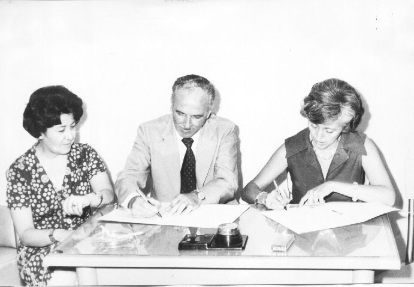
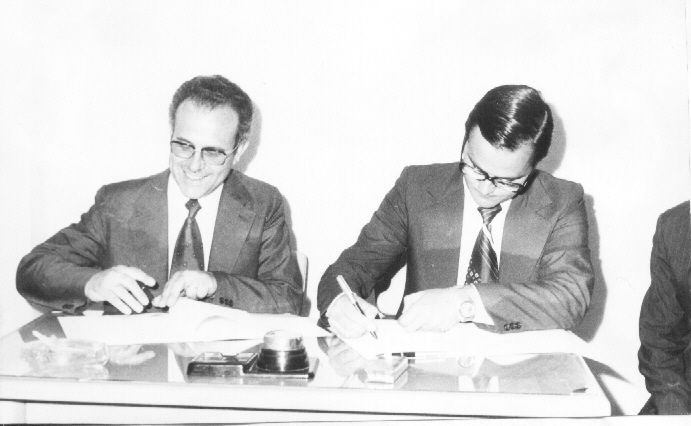
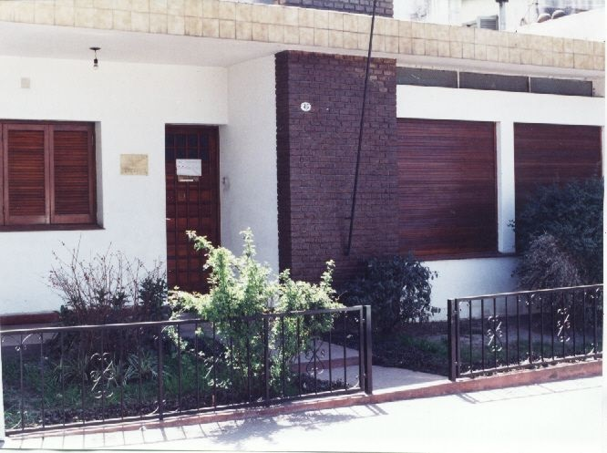

<div class="container" style="margin-top: 15px">
    <div class="row">
      <div class="col-md-9">
        <div class="card">
          <div class="card-header">
              <h3 class="h3 text-center">Historia del Colegio de Escribanos de Jujuy</h3>
          </div>

          <div class="card-body ">


              <p><br>El Colegio de Escribanos de Jujuy se creó el 21 de marzo de 1956, fecha en que los notarios Rodolfo Tadeo Álvarez Prado, Vicente Anselmo Apaza, Elfidio Armando Arnedo, Alfredo Luis Benítez, Jorge Alberto Frías, Justo José Frías, Carlos Martiarena, Juan Antonio Martínez, Vicente Ricardo Molouny, Pedro Nolasco Pizarro, Néstor Sánchez Mera, María Ángela Valente de Snopek, Elías Yapur y Miguel Zenarruza, fundaron una asociación para colegiar a todos los escribanos de la provincia.
              <br>Entre los objetivos propuestos y la visión de los colegas mencionados, reafirmaron fomentar y sostener la unión y solidaridad entre todos los escribanos de este estado, defender los intereses del gremio, velar por la rectitud e ilustración del ejercicio del notariado y proteger los derechos de los asociados en el orden profesional.
              <br>&nbsp;
              <br>Sin un edificio propio, las reuniones se concretaron en diferentes ámbitos, sobre todo en los espacios de las propias escribanías. Incluso algunas de estas reuniones llegaron a celebrarse en el local de la Sociedad Obrera de Socorros Mutuos, sita aún hoy en la calle Balcarce N° 357 de esta ciudad, como nos dan cuenta las actas de aquella época.
              <br>Con estos recursos contó la primera Comisión Directiva, integrada por los notarios Rodolfo Tadeo Álvarez Prado -como presidente-, Vicente Anselmo Apaza -como secretario-, Vicente Ricardo Molouny -como tesorero- y Jorge Alberto Frías y Néstor Sánchez Mera -como vocales 1° y 2°, respectivamente, y las que le sucedieron.
              <br>Para 1977, año en que es sancionada y promulgada la Ley Notarial 3374 (B.O. de la Provincia de Jujuy del 30/3/77), el sueño de contar con una sede propia se había convertido en una necesidad y un anhelo concreto de los notarios de Jujuy.
               <br>Ante la imposibilidad de acceder a la sede social propia, el Colegio de Escribanos de Jujuy funcionó en un edificio, cedido por la Escribana María Cristina González Llamazares ubicado en la calle Alvear al 1218 de esta ciudad.
               <br>&nbsp;
               
               <br>Hacia octubre de ese mismo año, el Colegio había comenzado a regularizar el flujo de sus ingresos, lo que le permitió afrontar al pago de un alquiler. Así se resolvió, trasladar la sede a dos locales ubicados en la planta alta de la calle Otero N° 315.
               <br>La inauguración oficial de esta casa tuvo lugar el 2 de octubre de 1977 y, aunque resulte anecdótico, es importante destacar que su funcionalidad se logró sobre la base de múltiples donaciones de los mismos notarios
               <br>&nbsp;
               
               <br>Hasta aquí se había recorrido un largo camino y se había dado un paso muy importante, a pesar de los pronósticos poco auguriosos que nunca faltan. Sin embargo, todavía restaba concretar el sueño mayor: la casa propia.
               <br><br>Luego de diversas gestiones del Consejo Directivo, se obtuvo la colaboración económica de los Colegios de Escribanos de la Provincia de Santa Fe, de la Provincia de Buenos Aires y de la Capital Federal, quienes, en una muestra acabada de federalismo y solidaridad, apoyaron a su hermano Colegio de Jujuy en este emprendimiento y lo hicieron posible. A estos recursos, se sumaron un préstamo del Banco de la Provincia de Jujuy y fondos propios. Así se concretó la adquisición y acondicionamiento de un inmueble estratégicamente ubicado en Avenida 19 de Abril al 415.
               <br>La inauguración de nuestra casa tuvo lugar el 15 de abril de 1979, en cuya oportunidad, además, se llevó a cabo la primera reunión cuatrimestral del Consejo Federal del Notariado Argentino, correspondiente a ese año y se inauguró el primer salón de pintura que lleva el nombre de "Rodrigo Pereira"; Escribano que labró el Acta Fundacional de la Ciudad de San Salvador de Jujuy, el 19 de abril de 1593.
               <br>&nbsp;<br>&nbsp;</p>

  </div>
  </div>
      </div>
      <div class="col-md-3">
     <app-aside></app-aside>
    </div>
    </div>
  </div>


<
